공조냉동기계기사(구) (2020-08-22 기출문제)
1과목: 기계열역학
1. 어떤 습증기의 엔트로피가 6.78kJ/(kg·K)라고 할 때 이 습증기의 엔탈피는 약 몇 kJ/kg인가? (단, 이 기체의 포화액 및 포화증기의 엔탈피와 엔트로피는 다음과 같다.)
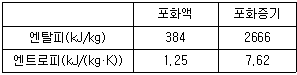
- 2365
- 2402
- 2473
- 2511
(정답률: 58%)

2. 압력(P)-부피(V) 선도에서 이상기체가 그림과 같은 사이클로 작동한다고 할 때 한 사이클 동안 행한 일은 어떻게 나타내는가?
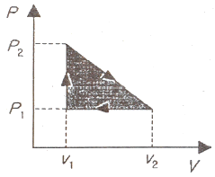
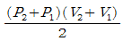
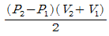
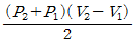
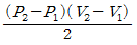
(정답률: 67%)
3. 다음 중 스테판-볼츠만의 법칙과 관련이 있는 열전달은?
- 대류
- 복사
- 전도
- 응축
(정답률: 77%)
4. 이상기체 2kg이 압력 98kPa, 온도 25℃상태에서 체적이 0.5m3였다면 이 이상기체의 기체상수는 약 몇 J/(kg·K)인가?
- 79
- 82
- 97
- 102
(정답률: 75%)
5. 냉매가 갖추어야 할 요건으로 틀린 것은?
- 증발온도에서 높은 잠열을 가져야 한다.
- 열전도율이 커야 한다.
- 표면장력이 커야 한다.
- 불활성이고 안전하며 비가연성이어야 한다.
(정답률: 70%)
6. 어떤 유체의 밀도가 741kg/m3이다. 이 유체의 비체적은 약 몇 m3/kg인가?
- 0.78×10-3
- 1.35×10-3
- 2.35×10-3
- 2.98×10-3
(정답률: 71%)
7. 이상적인 랭킨사이클에서 터빈 입구 온도가 350℃이고, 75kPa과 3MPa의 압력범위에서 작동한다. 펌프 입구와 출구, 터빈 입구와 출구에서 엔탈피는 각각 384.4kJ/kg, 387.5kJ/kg, 3116kJ/kg, 2403kJ/kg이다. 펌프일을 고려한 사이클의 열효율과 펌프일을 무시한 사이클의 열효율 차이는 약 몇 %인가?
- 0.001
- 0.092
- 0.11
- 0.18
(정답률: 40%)
8. 전류 25A, 전압 13V를 가하여 축전지를 충전하고 있다. 충전하는 동안 축전지로부터 15W의 열손실이 있다. 축전지의 내부에너지 변화율은 약 몇 W인가?
- 310
- 340
- 370
- 420
(정답률: 59%)
9. 고온열원(T1)과 저온열원(T2)사이에서 작동하는 역카르노 사이클에 의한 열펌프(heat pump)의 성능계수는?
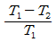
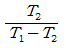
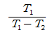
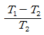
(정답률: 63%)
10. 압력이 0.2MPa, 온도가 20℃의 공기를 압력이 2MPa로 될 때까지 가역단열 압축했을 때 온도는 약 몇 ℃인가? (단, 공기는 비열비가 1.4인 이상기체로 간주한다.)
- 225.7
- 273.7
- 292.7
- 358.7
(정답률: 64%)
11. 어떤 물질에서 기체상수(R)가 0.189kJ/(kg·K), 임계온도가 3⑤K, 임계압력이 7380kPa이다. 이 기체의 압축성 인자(compressibility factor, Z)가 다음과 같은 관계식을 나타낸다고 할 때 이 물질의 20℃, 1000kPa 상태에서의 비체적(v)은 약 몇 m3/kg인가? (단, P는 압력, T는 절대온도, Pr은 환산압력, Tr은 환산온도를 나타낸다.)
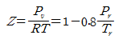
- 0.0111
- 0.0303
- 0.0491
- 0.⑤54
(정답률: 42%)
12. 단열된 노즐에 유체가 10m/s의 속도로 들어와서 200m/s의 속도로 가속되어 나간다. 출구에서의 엔탈피가 2770kJ/kg일 때 입구에서의 엔탈피는 약 몇 kJ/kg인가?
- 4370
- 4210
- 2850
- 2790
(정답률: 54%)
13. 100℃의 구리 10kg을 20℃의 물 2kg이 들어있는 단열 용기에 넣었다. 물과 구리 사이의 열전달을 통한 평형 온도는 약 몇 ℃인가? (단, 구리 비열은 0.45kJ/(kg·K), 물 비열은 4.2kJ/(kg·K)이다.)
- 48
- 54
- 60
- 68
(정답률: 59%)
14. 이상적인 교축과정(throttling process)을 해석하는데 있어서 다음 설명 중 옳지 않은 것은?
- 엔트로피는 증가한다.
- 엔탈피의 변화가 없다고 본다.
- 정압과정으로 간주한다.
- 냉동기의 팽창밸브의 이론적인 해석에 적용될 수 있다.
(정답률: 60%)
15. 이상기체로 작동하는 어떤 기관의 압축비가 17이다. 압축 전의 압력 및 온도는 112kPa, 25℃이고 압축 후의 압력은 4350kPa이었다. 압축 후의 온도는 약 몇 ℃인가?
- 53.7
- 180.2
- 236.4
- 407.8
(정답률: 50%)
16. 다음은 오토(Otto) 사이클의 온도-엔트로피(T-S)선도이다. 이 사이클의 열효율을 온도를 이용하여 나타낼 때 옳은 것은? (단, 공기의 비열은 일정한 것으로 본다.)
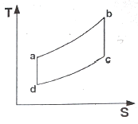
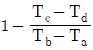
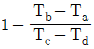
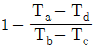
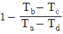
(정답률: 49%)
17. 클라우지우스(Clausius)의 부등식을 옳게 나타낸 것은? (단, T는 절대온도, Q는 시스템으로 공급된 전체 열량을 나타낸다.)
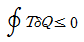
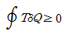
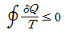
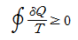
(정답률: 73%)
18. 다음 중 강도성 상태량(intensive property)이 아닌 것은?
- 온도
- 내부에너지
- 밀도
- 압력
(정답률: 75%)
19. 기체가 0.3MPa로 일정한 압력 하에 8m3에서 4m3까지 마찰 없이 압축되면서 동시에 500kJ의 열을 외부로 방출하였다면, 내부에너지의 변화는 약 몇 kJ인가?
- 700
- 1700
- 1200
- 1400
(정답률: 60%)
20. 카르노사이클로 작동하는 열기관이 1000℃의 열원과 300K의 대기 사이에서 작동한다. 이 열기관이 사이클 당 100kJ의 일을 할 경우 사이클 당 1000℃의 열원으로부터 받은 열량은 약 몇 kJ인가?
- 70.0
- 76.4
- 130.8
- 142.9
(정답률: 51%)
2과목: 냉동공학
21. 냉동능력이 15RT인 냉동장치가 있다. 흡입증기 포화온도가 –10℃이며, 건조포화증기 흡입압축으로 운전된다. 이 때 응축온도가 45℃이라면 이 냉동장치의 응축부하(kW)는 얼마인가? (단, 1RT는 3.8kW이다.)
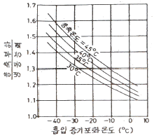
- 74.1
- 58.7
- 49.8
- 36.2
(정답률: 54%)
22. 다음 중 터보압축기의 용량(능력)제어 방법이 아닌 것은?
- 회전속도에 의한 제어
- 흡입 댐퍼에 의한 제어
- 부스터에 의한 제어
- 흡입 가이드 베인에 의한 제어
(정답률: 60%)
23. 냉매의 구비조건으로 옳은 것은?
- 표면장력이 작을 것
- 임계온도가 낮을 것
- 증발잠열이 작을 것
- 비체적이 클 것
(정답률: 58%)
24. 증기 압축식 열펌프에 관한 설명으로 틀린 것은?
- 하나의 장치로 난방 및 냉방으로 사용할 수 있다.
- 일반적으로 성적계수가 1보다 작다.
- 난방을 위한 별도의 보일러 설치가 필요없어 대기오염이 적다.
- 증발온도가 높고 응축온도가 낮을수록 성적계수가 커진다.
(정답률: 72%)
25. 프레온 냉동장치의 배관공사 중에 수분이 장치내에 잔류했을 경우 이 수분에 의한 장치에 나타나는 현상으로 틀린 것은?
- 프레온 냉매는 수분의 용해도가 적으므로 냉동장치 내의 온도가 0℃이하이면 수분은 빙결한다.
- 수분은 냉동장치 내에서 철재 재료 등을 부식시킨다.
- 증발기의 전열기능을 저하시키고, 흡입관 내 냉매 흐름을 방해한다.
- 프레온 냉매와 수분이 서로 화합반응하여 알칼리를 생성시킨다.
(정답률: 68%)
26. 0℃와 100℃ 사이에서 작용하는 카르노 사이클 기관(㉮)과 400℃와 500℃사이에서 작용하는 카르노 사이클 기관(㉯)이 있다. ㉮기관 열효율은 ㉯기관 열효율의 약 몇 배가 되는가?
- 1.2배
- 2배
- 2.5배
- 4배
(정답률: 71%)
27. 팽창밸브 중 과열도를 검출하여 냉매유량을 제어하는 것은?
- 정압식 자동팽창밸브
- 수동팽창밸브
- 온도식 자동팽창밸브
- 모세관
(정답률: 79%)
28. 다음 중 가연성이 있어 조건이 나쁘면 인화, 폭발위험이 가장 큰 냉매는?
- R-717
- R-744
- R-718
- R-502
(정답률: 58%)
29. 흡수식 냉동사이클 선도에 대한 설명으로 틀린 것은?
- 듀링선도는 수용액의 농도, 온도, 압력 관계를 나타낸다.
- 증발잠열 등 흡수식냉동기 설계상 필요한 열량은 엔탈피-농도 선도를 통해 구할 수 있다.
- 듀링선도에서는 각 열교환기내의 열교환량을 표현할 수 없다.
- 엔탈피-농도 선도는 수평축에 비엔탈피, 수직축에 농도를 잡고 포화용액의 등온, 등압선과 발생증기의 등압선을 그은 것이다.
(정답률: 39%)
30. 저온용 단열재의 조건으로 틀린 것은?
- 내구성이 있을 것
- 흡습성이 클 것
- 팽창계수가 작을 것
- 연전도율이 작을 것
(정답률: 75%)
31. 다음 안전장치에 대한 설명으로 틀린 것은?
- 가용전은 응축기, 수액기 등의 압력용기에 안전장치로 설치된다.
- 파열판은 얇은 금속판으로 용기의 구멍을 막고 있는 구조이며 안전밸브로 사용된다.
- 안전밸브는 고압측의 각 부분에 설치하여 일정 이상 고압이 되면 밸브가 열려 저압부로 보내거나 외부로 방출하도록 한다.
- 고압차단스위치는 조정설정압력보다 벨로즈에 가해진 압력이 낮아졌을 때 압축기를 정시키는 안전장치이다.
(정답률: 69%)
32. 흡수식 냉동기의 특징에 대한 설명으로 틀린 것은?
- 부분 부하에 대한 대응성이 좋다.
- 압축식, 터보식 냉동기에 비해 소음과 진동이 적다.
- 초기 운전시 정격 성능을 발휘할 때까지의 도달 속도가 느리다.
- 용량 제어 범위가 비교적 작아 큰 용량 장치가 요구되는 장소에 설치 시 보조 기기 설비가 요구된다.
(정답률: 53%)
33. 다음의 p-h선도상에서 냉동능력이 1냉동톤인 소형 냉장고의 실제 소요동력(kW)은? (단, 1냉동톤은 3.8kW이며, 압축효율은 0.75, 기계효율은 0.9이다.)
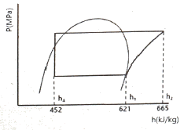
- 1.47
- 1.81
- 2.73
- 3.27
(정답률: 51%)
34. 냉동장치의 윤활 목적으로 틀린 것은?
- 마모방지
- 부식방지
- 냉매 누설방지
- 동력손실 증대
(정답률: 74%)
35. 2단압축 1단팽창 냉동장치에서 고단 압축기의 냉매 순환량을 G2, 저단 압축기의 냉매 순환량을 G1이라고 할 때 G2/G1은 얼마인가?
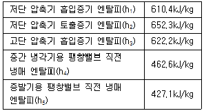
- 0.8
- 1.4
- 2.5
- 3.1
(정답률: 42%)
36. 공기열원 수가열 열펌프 장치를 가열운전(시운전)할 때 압축기 토출밸브 부근에서 토출가스 온도를 측정하였더니 일반적인 온도보다 지나치게 높게 나타났다. 이러한 현상의 원인으로 가장 거리가 먼 것은?
- 냉매 분해가 일어났다.
- 팽창밸브가 지나치게 교축 되었다.
- 공기측 열교환기(증발기)에서 눈에 띄게 착상이 일어났다.
- 가열측 순환 온수의 유량이 설계 값 보다 많다.
(정답률: 45%)
37. 두께 30cm의 벽돌로 된 벽이 있다. 내면온도 21℃, 외면온도가 35℃일 때 이 벽을 통해 흐르는 열량(W/m2)은? (단, 벽돌의 열전도율은 0.793W/m·K이다.)
- 32
- 37
- 40
- 43
(정답률: 69%)
38. 온도식 팽창밸브는 어떤 요인에 의해 작동되는가?
- 증발온도
- 과냉각도
- 과열도
- 액화온도
(정답률: 69%)
39. 프레온 냉매를 사용하는 냉동장치에 공기가 침입하면 어떤 현상이 일어나는가?
- 고압 압력이 높아지므로 냉매 순환량이 많아지고 냉동능력도 증가한다.
- 냉동톤당 소요동력이 증가한다.
- 고압 압력은 공기의 분압만큼 낮아진다.
- 배출가스의 온도가 상승하므로 응축기의 열통과율이 높아지고 냉동능력도 증가한다.
(정답률: 72%)
40. 냉동부하가 25RT인 브라인 쿨러가 있다. 열전달 계수가 1.53kW/m2·K이고, 브라인 입구온도가 –5℃, 출구온도가 –10℃, 냉매의 증발온도가 –15℃일 때 전열면적(m2)은 얼마인가? (단, 1RT는 3.8kW이고, 산술평균 온도차를 이용한다.)
- 16.7
- 12.1
- 8.3
- 6.5
(정답률: 54%)
3과목: 공기조화
41. 인체의 발열에 관한 설명으로 틀린 것은?
- 증발: 인체 피부에서의 수분이 증발하여 그 증발열로 체내 열을 방출한다.
- 대류: 인체 표면과 주위공기와의 사이에 열의 이동으로 인위적으로 조절이 가능하며 주위공기의 온도와 기류에 영향을 받는다.
- 복사: 실내온도와 관계없이 유리창과 벽면등의 표면온도와 인체 표면과의 온도차에 따라 실제 느끼지 못하는 사이 방출되는 열이다.
- 전도: 겨울철 유리창근처에서 추위를 느끼는 것은 전도에 의한 열 방출이다.
(정답률: 55%)
42. 냉방시 실내부하에 속하지 않는 것은?
- 외기의 도입으로 인한 취득열량
- 극간풍에 의한 취득열량
- 벽체로부터의 취득열량
- 유리로부터의 취득열량
(정답률: 53%)
43. 송풍기의 크기는 송풍기의 번호(No,#)로 나타내는데, 원심송풍기의 송풍기 번호를 구하는 식으로 옳은 것은?
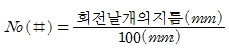
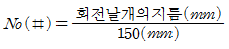
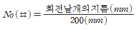
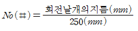
(정답률: 65%)
44. 아래 습공기 선도에 나타낸 과정과 일치하는 장치도는?
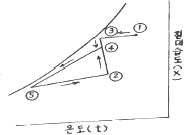
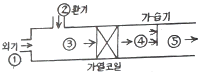
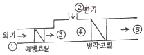
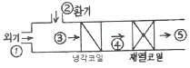
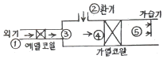
(정답률: 68%)
45. 인위적으로 실내 또는 일정한 공간의 공기를 사용 목적에 적합하도록 공기조화 하는데 있어서 고려하지 않아도 되는 것은?
- 온도
- 습도
- 색도
- 기류
(정답률: 75%)
46. 크기 1000×500mm의 직관 덕트에 35℃의 온풍 18000m3/h이 흐르고 있다. 이 덕트가 –10℃의 실외 부분을 지날 때 길이 20m당 덕트표면으로부터의 열손실(kW)은? (단, 덕트는 암면 25mm로 보온되어 있고, 이 때 1000m당 온도 차 1℃에 대한 온도 강하는 0.9℃이다. 공기의 밀도는 1.2kg/m3, 정압비열은 1.01kJ/kg·K이다.)
- 3.0
- 3.8
- 4.9
- 6.0
(정답률: 42%)
47. 동일한 덕트 장치에서 송풍기의 날개의 직경이 d1, 전동기 동력이 L1인 송풍기를 직경 d2로 교환했을 때 동력의 변화로 옳은 것은? (단, 회전수는 일정하다.)
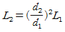
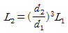
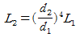
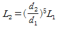
(정답률: 69%)
48. 다음의 취출과 관련한 용어 설명으로 틀린 것은?
- 그릴(grill)은 취출구의 전면에 설치하는 면격자이다.
- 아스펙트(aspect)비는 짧은 변을 긴 변으로 나눈 값이다.
- 셔터(shutter)는 취출구의 후부에 설치하는 풍량조절용 또는 개폐용의 기구이다.
- 드래프트(draft)는 인체에 닿아 불쾌감을 주는 기류이다.
(정답률: 56%)
49. 온수난방에 대한 설명으로 틀린 것은?
- 온수의 체적팽창을 고려하여 팽창탱크를 설치한다.
- 보일러가 정지하여도 실내온도의 급격한 강하가 적다.
- 밀폐식일 경우 배관의 부식이 많아 수명이 짧다.
- 방열기에 공급되는 온수 온도와 유량 조절이 용이하다.
(정답률: 69%)
50. 증기 난방배관에서 증기트랩을 사용하는 이유로 옳은 것은?
- 관내의 공기를 배출하기 위하여
- 배관의 신축을 흡수하기 위하여
- 관내의 압력을 조절하기 위하여
- 증기관에 발생된 응축수를 제거하기 위하여
(정답률: 62%)
51. 보일러에서 화염이 없어지면 화염검출기가 이를 감지하여 연료공급을 즉시 정시시키는 형태의 제어는?
- 시퀀스 제어
- 피드백 제어
- 인터록 제어
- 수면 제어
(정답률: 61%)
52. 중앙식 난방법의 하나로서 각 건물마다 보일러 시설 없이 일정 장소에서 여러 건물에 증기 또는 고온수 등을 보내서 난방하는 방식은?
- 복사난방
- 지역난방
- 개별난방
- 온풍난방
(정답률: 74%)
53. 보일러의 출력에는 상용출력과 정격출력이 있다. 다음 중 이들의 관계가 적당한 것은?
- 상용출력 = 난방부하 + 급탕부하 + 배관부하
- 정격출력 = 난방부하 + 배관 열손실부하
- 상용출력 = 배관 열손실부하 + 보일러 예열부하
- 정격출력 = 난방부하 + 급탕부하 + 배관부하 + 예열부하 + 온수부하
(정답률: 62%)
54. 수관식 보일러의 특징에 관한 설명으로 틀린 것은?
- 관(드럼)의 직경이 적어서 고온·고압용에 적당하다.
- 전열면적이 커서 증기발생시간이 빠르다.
- 구조가 단순하여 청소나 검사 수리가 용이하다.
- 보유수량이 적어 부하 변동시 압력변화가 크다.
(정답률: 44%)
55. 6인용 입원실이 100실인 병원의 입원실 전체 환기를 위한 최소 신선 공기량(m3/h)은? (단, 외기 중 CO2함유량은 0.0003m3/m3이고 실내 CO2의 허용농도는 0.1%, 재실자의 CO2발생량은 개인당 0.015m3/h이다.)
- 6857
- 8857
- 10857
- 12857
(정답률: 52%)
56. 다음 공기조화 방식 중 냉매방식인 것은?
- 유인유닛 방식
- 멀티 존 방식
- 팬코일 유닛방식
- 패키지유닛 방식
(정답률: 60%)
57. 전열교환기에 관한 설명으로 틀린 것은?
- 공기조화기기의 용량설계에 영향을 주지 않음
- 열교환기 설치로 설비비와 요구 공간 증가
- 회전식과 고정식이 있음
- 배기와 환기의 열교환으로 현열과 잠열을 교환
(정답률: 53%)
58. 복사 난방방식의 특징에 대한 설명으로 틀린 것은?
- 외기 온도의 갑작스러운 변화에 대응이 용이함
- 실내 상하 온도분포가 균일하여 난방효과가 이상적임
- 실내 공기온도가 낮아도 되므로 열손실이 적음
- 바닥에 난방기기가 필요 없어 바닥면의 이용도가 높음
(정답률: 56%)
59. 송풍기의 풍량조절법이 아닌 것은?
- 토출댐퍼에 의한 제어
- 흡입댐퍼에 의한 제어
- 토출베인에 의한 제어
- 흡입베인에 의한 제어
(정답률: 55%)
60. 유효 온도차(상당 외기온도차)에 대한 설명으로 틀린 것은?
- 태양 일사량을 고려한 온도차이다.
- 계절, 시각 및 방위에 따라 변화한다.
- 실내온도와는 무관하다.
- 냉방부하 시에 적용된다.
(정답률: 62%)
4과목: 전기제어공학
61. 그림과 같은 회로에서 전달함수
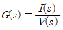
를 구하면?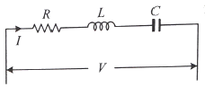
- R+Ls+Cs
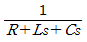
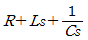
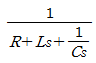
(정답률: 52%)
62. 논리식 A+BC와 등가인 논리식은?
- AB+AC
- (A+B)(A+C)
- (A+B)C
- (A+C)B
(정답률: 62%)
63. 입력 A, B, C에 따라 Y를 출력하는 다음의 회로는 무접점 논리회로 중 어떤 회로인가?
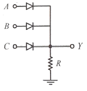
- OR 회로
- NOR 회로
- AND 회로
- NAND 회로
(정답률: 54%)
64. 승강기나 에스컬레이터 등의 옥내 전선의 절연저항을 측정하는데 가장 적당한 측정기기는?
- 메거
- 휘트스톤 브리지
- 켈빈 더블 브리지
- 코올라우시 브리지
(정답률: 63%)
65. e(t)=200sinωt(V),
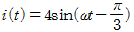
(A)일 때 유효전력(W)은?- 100
- 200
- 300
- 400
(정답률: 34%)
66. 전력(W)에 관한 설명으로 틀린 것은?
- 단위는 J/s 이다.
- 열량을 적분하면 전력이다.
- 단위 시간에 대한 전기 에너지이다.
- 공률(일률)과 같은 단위를 갖는다.
(정답률: 57%)
67. 환상 솔레노이드 철심에 200회의 코일을 감고 2A의 전류를 흘릴 때 발생하는 기자력은 몇 AT인가?
- 50
- 100
- 200
- 400
(정답률: 63%)
68. 제어편차가 검출될 때 편차가 변화하는 속도에 비례하여 조작량을 가감하도록 하는 제어로써 오차가 커지는 것을 미연에 방지하는 제어동작은?
- ON/OFF 제어 동작
- 미분 제어 동작
- 적분 제어 동작
- 비례 제어 동작
(정답률: 54%)
69. 10μF의 콘덴서에 200V의 전압을 인가하였을 때 콘덴서에 축적되는 전하량은 몇 C인가?
- 2×10-3
- 2×10-4
- 2×10-5
- 2×10-6
(정답률: 48%)
70. 3상 유도전동기의 출력이 10kW, 슬립이 4.8%일 때의 2차 동손은 약 몇 kW인가?
- 0.24
- 0.36
- 0.5
- 0.8
(정답률: 35%)
71. 유도전동기에 인가되는 전압과 주파수의 비를 일정하게 제어하여 유도전동기의 속도를 정격속도 이하로 제어하는 방식은?
- CVCF 제어방식
- VVVF 제어방식
- 교류 궤환 제어방식
- 교류 2단 속도 제어방식
(정답률: 64%)
72. 회전각을 전압으로 변환시키는데 사용되는 위치 변환기는?
- 속도계
- 증폭기
- 변조기
- 전위차계
(정답률: 56%)
73. 그림의 신호흐름선도에서 전달함수
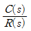
는?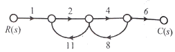
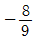
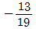
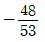
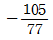
(정답률: 68%)
74. 폐루프 제어시스템의 구성에서 조절부와 조작부를 합쳐서 무엇이라고 하는가?
- 보상요소
- 제어요소
- 기준입력요소
- 귀환요소
(정답률: 68%)
75. 그림과 같은 회로에 흐르는 전류 I(A)는?
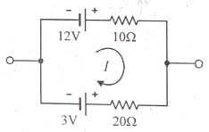
- 0.3
- 0.6
- 0.9
- 1.2
(정답률: 33%)
76. 그림과 같은 단위 피드백 제어시스템의 전달함수 는?
(정답률: 51%)
77. 선간전압 200V의 3상 교류전원에 화물용 승강기를 접속하고 전력과 전류를 측정하였더니 2.77kW, 10A이었다. 이 화물용 승강기 모터의 역률은 약 얼마인가?
- 0.6
- 0.7
- 0.8
- 0.9
(정답률: 48%)
78. 그림의 논리회로에서 A, B, C, D를 입력, Y를 출력이라 할 때 출력 식은?
- A+B+C+D
- (A+B)(C+D)
- AB+CD
- ABCD
(정답률: 40%)
79. 그림과 같은 RL직렬회로에서 공급전압의 크기가 10V일 때 |VR|=8V이면 VL의 크기는 몇 V인가?
- 2
- 4
- 6
- 8
(정답률: 53%)
80. 전기자 철심을 규소 강판으로 성층하는 주된 이유는?
- 정류자면의 손상이 적다.
- 가공하기 쉽다.
- 철손을 적게 할 수 있다.
- 기계손을 적게 할 수 있다.
(정답률: 58%)
5과목: 배관일반
81. 팬코일 유닛방식의 배관방식 중 공급관이 2개이고 환수관이 1개인 방식은?
- 1관식
- 2관식
- 3관식
- 4관식
(정답률: 69%)
82. 냉매 액관 중에 플래시 가스 발생의 방지대책으로 틀린 것은?
- 온도가 높은 곳을 통과하는 액관은 방열시공을 한다.
- 액관, 드라이어 등의 구경을 충분히 선정하여 통과저항을 적게 한다.
- 액펌프를 사용하여 압력강하를 보상할 수 있는 충분한 압력을 준다.
- 열교환기를 사용하여 액관에 들어가는 냉매의 과냉각도를 없앤다.
(정답률: 52%)
83. 공랭식 응축기 배관 시 유의사항으로 틀린 것은?
- 소형 냉동기에 사용하며 핀이 있는 파이프 속에 냉매를 통하여 바람 이송 냉각설계로 되어 있다.
- 냉방기가 응축기 아래 설치되는 경우 배관 높이가 10m 이상일 때는 5m마다 오일 트랩을 설치해야 한다.
- 냉방기가 응축기 위에 위치하고, 압축기가 냉방기에 내장되었을 경우에는 오일 트랩이 필요 없다.
- 수랭식에 비해 능력은 낮지만, 냉각수를 사용하지 않아 동결의 염려가 없다.
(정답률: 60%)
84. 배수 배관 시공 시 청소구의 설치위치로 가장 적절하지 않은 곳은?
- 배수 수평주관과 배수수평 분기관의 분기점
- 길이가 긴 수평 배수관 중간
- 배수 수직관의 제일 윗부분 또는 근처
- 배수관이 45°이상의 각도로 방향을 전환하는 곳
(정답률: 54%)
85. 급탕배관에 관한 설명으로 틀린 것은?
- 단관식의 경우 급수관경보다 큰 관을 사용해야 한다.
- 하향식 공급 방식에서는 급탕관 및 복귀관은 모두 선하향 구배로 한다.
- 보통 급탕관은 수명이 짧으므로 장래에 수리, 교체가 용이하도록 노출 배관하는 것이 좋다.
- 연관은 열에 강하고 부식도 잘되지 않으므로 급탕배관에 적합하다.
(정답률: 59%)
86. 냉매 배관 시 유의사항으로 틀린 것은?
- 냉동장치내의 배관은 절대기밀을 유지 할 것
- 배관도중에 고저의 변화를 될수록 피할 것
- 기기간의 배관은 가능한 한 짧게 할 것
- 만곡부는 될 수 있는 한 적고 또한 곡률반경은 작게 할 것
(정답률: 68%)
87. 염화비닐관의 설명으로 틀린 것은?
- 열팽창률이 크다.
- 관내 마찰손실이 적다.
- 산, 알칼리 등에 대해 내식성이 적다.
- 고온 또는 저온의 장소에 부적당하다.
(정답률: 63%)
88. 급수펌프에서 발생하는 캐비테이션 현상의 방지법으로 틀린 것은?
- 펌프설치 위치를 낮춘다.
- 입형펌프를 사용한다.
- 흡입손실수두를 줄인다.
- 회전수를 올려 흡입속도를 증가시킨다.
(정답률: 70%)
89. 가스배관의 설치 시 유의사항으로 틀린 것은?
- 특별한 경우를 제외한 배관의 최고사용압력은 중압이하일 것
- 배관은 하천(하천을 횡단하는 경우는 제외) 또는 하수구 등 암거내에 설치할 것
- 지반이 약한 곳에 설치되는 배관은 지반침하에 의해 배관이 손상되지 않도록 필요한 조치 후 배관을 설치할 것
- 본관 및 공급관은 건축물의 내부 또는 기초 밑에 설치하지 아니할 것
(정답률: 59%)
90. 밀폐식 온수난방 배관에 대한 설명으로 틀린 것은?
- 팽창탱크를 사용한다.
- 배관의 부식이 비교적 적어 수명이 길다.
- 배관경이 적어지고 방열기도 적게 할 수 있다.
- 배관 내의 온수 온도는 70℃이하이다.
(정답률: 60%)
91. 동관 이음 중 경납땜 이음에 사용되는 것으로 가장 거리가 먼 것은?
- 황동납
- 은납
- 양은납
- 규소납
(정답률: 46%)
92. 온수난방 배관에서 리버스 리턴(reverse return)방식을 채택하는 주된 이유는?
- 온수의 유량 분배를 균일하게 하기 위하여
- 배관의 길이를 짧게하기 위하여
- 배관의 신축을 흡수하기 위하여
- 온수가 식지 않도록 하기 위하여
(정답률: 69%)
93. 하향급수 배관방식에서 수평주관의 설치위치로 가장 적절한 것은?
- 지하층의 천장 또는 1층의 바닥
- 중간층의 바닥 또는 천장
- 최상층의 바닥 또는 천장
- 최상층의 천장 또는 옥상
(정답률: 52%)
94. 냉매 배관에서 압축기 흡입관의 시공 시 유의사항으로 틀린 것은?
- 압축기가 증발기보다 밑에 있는 경우 흡입관은 작은 트랩을 통과한 후 증발기 상부보다 높은 위치까지 올려 압축기로 가게 한다.
- 흡입관의 수직상승 입상부가 매우 길 때는 냉동기유의 회수를 쉽게 하기 위하여 약 20m마다 중간에 트랩을 설치한다.
- 각각의 증발기에서 흡입 주관으로 들어가는 관은 주관 상부로부터 들어가도록 접속한다.
- 2대 이상의 증발기가 있어도 부하의 변동이 그다지 크지 않은 경우는 1개의 입상관으로 충분하다.
(정답률: 55%)
95. 난방 배관 시공을 위해 벽, 바닥 등에 관통 배관 시공을 할 때, 슬리브(sleeve)를 사용하는 이유로 가장 거리가 먼 것은?
- 열팽창에 따른 배관 신축에 적응하기 위해
- 관 교체 시 편리하게 하기 위해
- 고장 시 수리를 편리하게 하기 위해
- 유체의 압력을 증가시키기 위해
(정답률: 69%)
96. 급수방식 중 압력탱크 방식에 대한 설명으로 틀린 것은?
- 국부적으로 고압을 필요로 하는데 적합하다.
- 탱크의 설치위치에 제한을 받지 않는다.
- 항상 일정한 수압으로 급수할 수 있다.
- 높은곳에 탱크를 설치할 필요가 없으므로 건축물의 구조를 강화할 필요가 없다.
(정답률: 53%)
97. 냉동설비배관에서 액분리기와 압축기 사이에 냉매배관을 할 때 구배로 옳은 것은?
- 1/100 정도의 압축기 측 상향 구배로 한다.
- 1/100 정도의 압축기 측 하향 구배로 한다.
- 1/200 정도의 압축기 측 상향 구배로 한다.
- 1/200 정도의 압축기 측 하향 구배로 한다.
(정답률: 57%)
98. 길이 30m의 강관의 온도 변화가 120℃일 때 강관에 대한 열팽창량은? (단, 강관의 열팽창계수는 11.9×10-6mm/mm·℃이다.)
- 42.8mm
- 42.8cm
- 42.8m
- 4.28mm
(정답률: 56%)
99. 증기나 응축수가 트랩이나 감압밸브 등의 기기에 들어가기 전 고형물을 제거하여 고장을 방지하기 위해 설치하는 장치는?
- 스트레이너
- 레듀서
- 신축이음
- 유니온
(정답률: 65%)
100. 부하변동에 따라 밸브의 개도를 조절함으로써 만액식 증발기의 액면을 일정하게 유지하는 역할을 하는 것은?
- 에어벤트
- 온도식 자동팽창밸브
- 감압밸브
- 플로트밸브
(정답률: 58%)
dH = TdS
여기서 dH는 엔탈피 변화량, T는 온도, dS는 엔트로피 변화량을 나타낸다. 이 식을 적용하기 위해서는 온도가 필요하다. 따라서, 습증기의 온도를 알아내야 한다.
습증기의 엔트로피가 6.78kJ/(kg·K)일 때, 엔트로피와 온도의 관계식을 이용하여 온도를 구할 수 있다. 이 관계식은 다음과 같다.
ds = CpdT/T + Rln(P/P0)
여기서 ds는 엔트로피 변화량, Cp는 등압비열, R은 기체상수, P는 압력, P0는 참압력을 나타낸다. 이 식을 적용하기 위해서는 압력과 참압력이 필요하다. 따라서, 습증기의 압력과 참압력을 알아내야 한다.
습증기의 압력과 참압력은 다음과 같다.
P = 100kPa
P0 = 100kPa
따라서, 엔트로피와 온도의 관계식은 다음과 같다.
ds = CpdT/T
여기서 Cp는 등압비열로, 다음과 같이 주어진다.
Cp = 1.0⑤kJ/(kg·K)
따라서, 엔트로피가 6.78kJ/(kg·K)일 때의 온도는 다음과 같다.
6.78 = 1.0⑤T/T
T = 676.62K
이제 온도를 이용하여 엔탈피를 구할 수 있다. 엔탈피와 온도의 관계식은 다음과 같다.
dH = Cp(T-T0)
여기서 T0는 0℃일 때의 온도를 나타낸다. 따라서, 엔탈피는 다음과 같다.
dH = 1.0⑤(676.62-273) = 409.67kJ/kg
따라서, 이 습증기의 엔탈피는 약 2365kJ/kg이다.